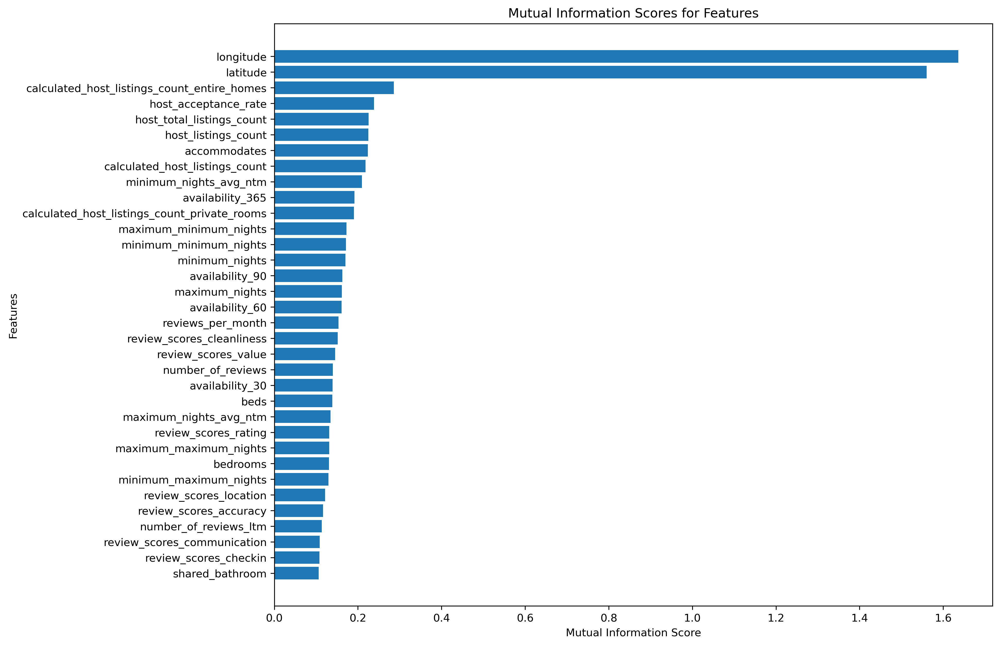

Decoding Berlin's AirBnB: A Data-Driven Analysis of 2022-2023 Prices
Introduction
The AirBnB dataset provides insights into the burgeoning peer-to-peer rental market in Berlin, showcasing a range of properties from cozy rooms to luxurious apartments. As tourism and short-term rentals become more popular in the city, understanding the factors that influence pricing is essential for both potential hosts and visitors. This analysis aims to determine the distribution of listing prices, the influence of location on pricing, the changes in pricing trends over time, and the impact of amenities and other features on price.
Overall Distribution of Listing Prices
First, to grasp the broader landscape of AirBnB listings in Berlin, it's fundamental to understand the range and concentration of prices.

Prices, when observed on a logarithmic scale, show a concentration primarily between 50 \$ and 200 \$. While outliers do exist, particularly in the higher price range, they represent a small fraction of the total listings. This suggests that the Berlin AirBnB market is catered more towards mid-range priced accommodations.
Having established a baseline understanding of price distribution, it's logical to dive deeper into the factors affecting these prices.
Location Dependent Prices
Location plays a pivotal role in real estate and short-term rentals. Let's explore how different Berlin districts fare in terms of the number of listings and their respective prices.

The districts of Friedrichshain-Kreuzberg and Berlin Mitte have the highest number of listings. This isn't surprising given their popularity as cultural and nightlife hotspots.

While these areas have a higher number of listings, their price spectrum also varies considerably. Central districts have a blend of mid-range and premium listings, which justifies the higher median price. In contrast, the outskirts offer budget-friendly options, making them suitable for long stays or budget travelers.
Understanding the role of location in price determination sets the stage to investigate how these prices evolve over time.
Price Evolution Over the Year 2023
The temporal aspect of listing prices can uncover seasonal trends or external influencing factors.

The steady rise in median prices from January to December suggests increased demand or external economic factors like inflation. Summertime, which is a peak tourist season, might be influencing a spike in prices around mid-year.
With the temporal dimension explored, we can now delve into the amenities and how they affect pricing.
Amenities and Their Influence on Pricing
Amenities can greatly influence a guest's stay experience. Let's discern if certain amenities tend to gravitate towards particular price bands.

Certain amenities like ironing facilities, toasters, and coffee makers are more prevalent in premium listings, suggesting that higher-priced accommodations ensure a wide array of conveniences. Conversely, some amenities such as smoking permissions seem to be a unique selling proposition for lower-priced listings.
Having delved into amenities, it's crucial to assess other features that might be influencing price points.
Features and Their Impact on Price
Various features, both tangible and intangible, can impact a property's appeal and price.

Interestingly, geographical coordinates, particularly latitude and longitude, emerge as significant determinants. This reiterates the importance of location. Additionally, guest reviews and ratings sway the price, emphasizing the importance of maintaining quality in listings.
Conclusion
To summarize:
- Prices in Berlin's AirBnB market are predominantly mid-range, catering to a broad audience.
- Location emerges as a consistent determinant of price, with central areas being both popular and pricier.
- Prices have seen a steady ascent throughout 2023, hinting at increased demand or economic fluctuations.
- Amenities, while influential, are secondary to location and guest feedback in dictating prices.
These insights equip potential hosts with the knowledge to position their listings competitively, and travelers can gauge the value offerings of accommodations better.
Interested in diving deeper into the data and analysis to gain even more insights? Check out the full Jupyter notebook here.